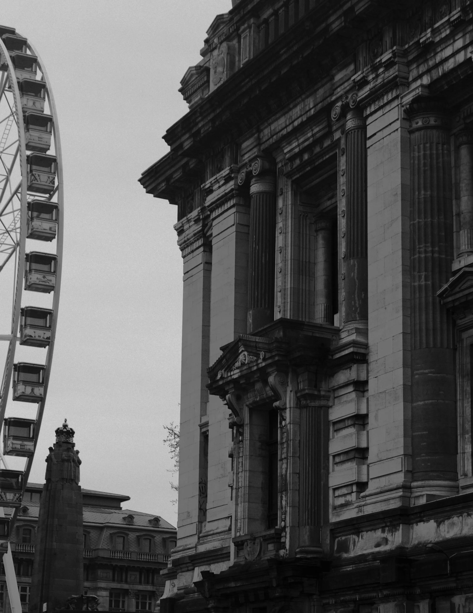
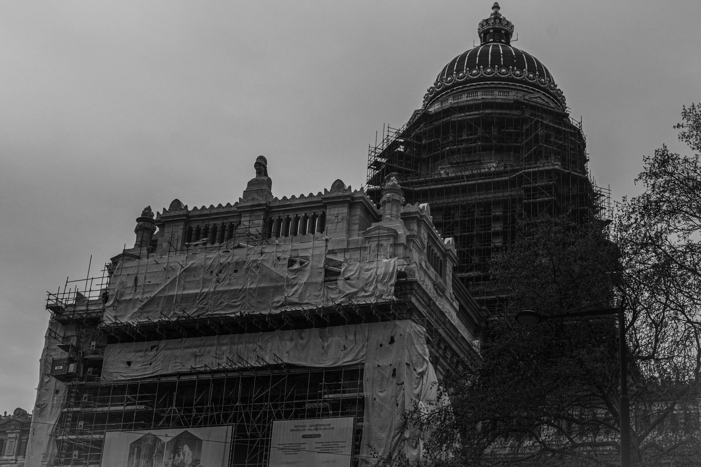

Palais de Justice
Joseph Poelaert
I
Joseph Poelaert
Un monstre de pierre posé en haut de la ville.

Un dôme à 104 mètres (mais malheureusement pas accessible au public). Des escaliers où on ne voit pas le bout et des couloirs où on se perd comme dans un labyrinthe.
Pour la création de ce bâtiment, il a fallu raser beaucoup de maisons des Marolles. Pour la petite anecdote, les habitants ont inventé une insulte spécialement pour lui : « schieven architect ».
Joseph Poelaert remporte le concours. Le quartier des Marolles est désigné pour accueillir l'édifice.
Léopold II inaugure le chantier. Plusieurs centaines de logements ont déjà été démolis.
Poelaert meurt épuisé, quatre ans avant la fin. Le chantier continue sans son auteur.
Le plus grand bâtiment civil du XIXe siècle est livré. Dôme à 104 mètres, 26 000 m² au sol.
Première campagne de restauration. Le palais entre dans une seconde vie, métallique.

L’orgueil bruxellois: démesuré, imparfait, indestructible.